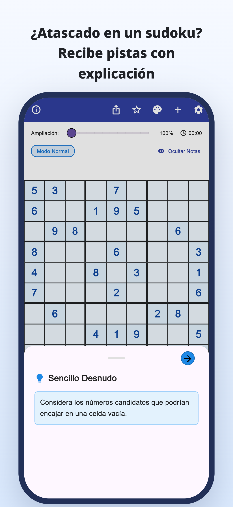
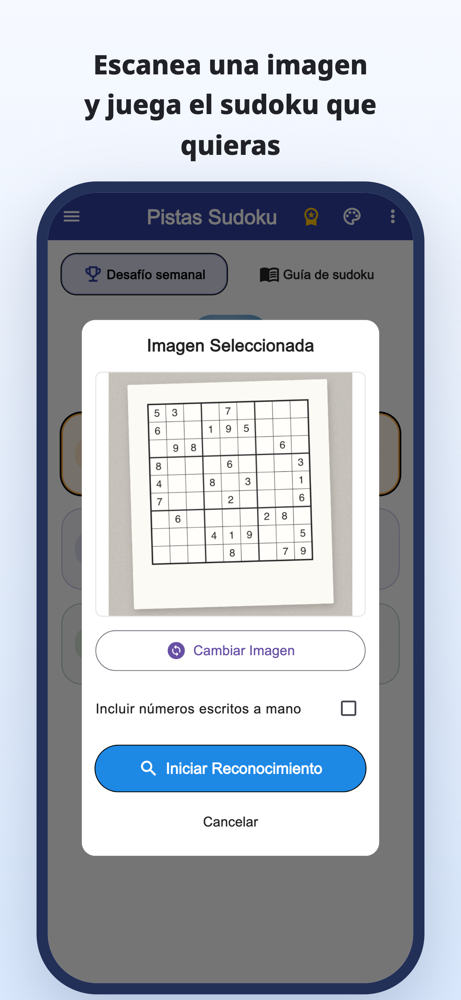
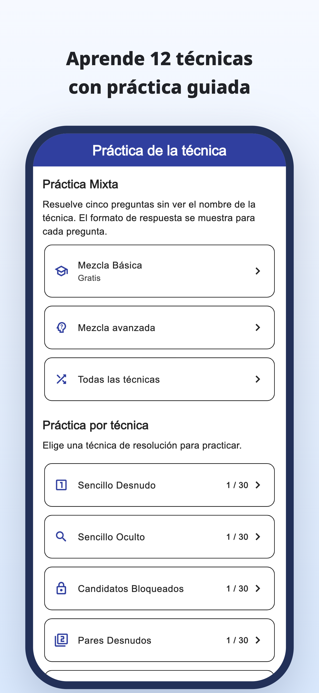
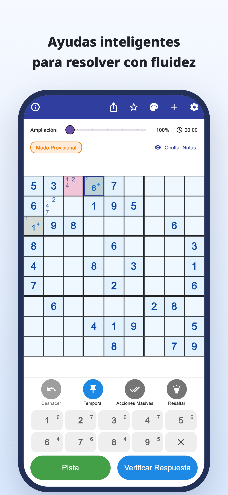
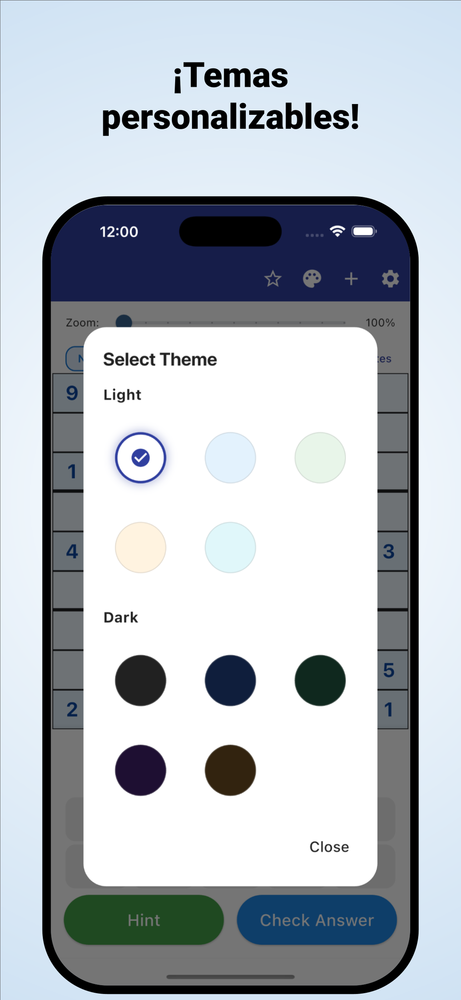

«¿Dónde debería mirar ahora?»
Revisas la cuadrícula una y otra vez,
pero sigues atascado en el mismo punto.
Escanea con la cámara · Pistas explicadas
Escanea sudokus de periódicos y revistas.
Entiende por qué encaja un número y sigue resolviendo por tu cuenta.
iPhone y Android / Descarga gratis · Compras en la app





¿Te pasa cuando juegas?
Revisas la cuadrícula una y otra vez,
pero sigues atascado en el mismo punto.
¿Por qué va ese número ahí?
Copiar la solución no es suficiente.
Quieres tomar el sudoku en papel que estás resolviendo
y continuarlo en la app.
Convierte un bloqueo en una pista
Lee un sudoku de un periódico o revista desde una foto y ahorra la introducción manual de cada número.
Leer desde una imagenConsulta el razonamiento de una jugada y úsalo para pensar en la siguiente, en lugar de limitarte a rellenar la respuesta.
Pistas explicadasConsulta explicaciones y ejercicios por técnica y practica cómo reconocerlas por tu cuenta.
Práctica por técnicaPara quienes disfrutan encontrando su solución
Importa tu sudoku habitual y continúa donde lo dejaste.
Comprende el punto difícil y sigue resolviendo tú.
Para principiantes y quienes quieren aprender otra técnica.
Leer · Probar · Practicar
Empieza en el navegador.
Lee una guía o juega un sudoku completo.
Desde notas de candidatos hasta técnicas y ejercicios.
Intenta resolverlo entero con pistas cuando las necesites.
Descubre las reglas y el placer de conectar las pistas.
Mira la casilla con borde azul y abre la pista.
Pista para el próximo paso
Revisa los candidatos de una casilla vacía.
Este ejemplo web permite probar una jugada. La app tiene una presentación diferente.
Cuando te atasques en un sudoku.
Descargar Pistas Sudoku
Descarga gratis · Compras en la app
La app se descarga y prueba gratis. Las pistas, comprobaciones y lecturas de imágenes tienen límites; algunos usos requieren ver un anuncio de vídeo.
Premium es una suscripción mensual o anual. Elimina los anuncios e incluye pistas y comprobaciones ilimitadas. La lectura de imágenes sigue teniendo un límite con Premium. Consulta los precios y condiciones en la app.
Importa una foto de tu sudoku. Revisa los números reconocidos y corrige los errores antes de empezar. Se admiten sudokus clásicos de 9×9.
Puedes jugar los sudokus incluidos y usar las explicaciones y ejercicios por técnica. Algunos sudokus y ejercicios requieren Premium.
Además de esta demostración de una jugada, puedes jugar un sudoku completo en el navegador y consultar guías y ejercicios.
Guía de sudoku